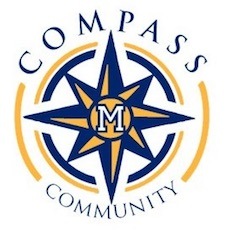
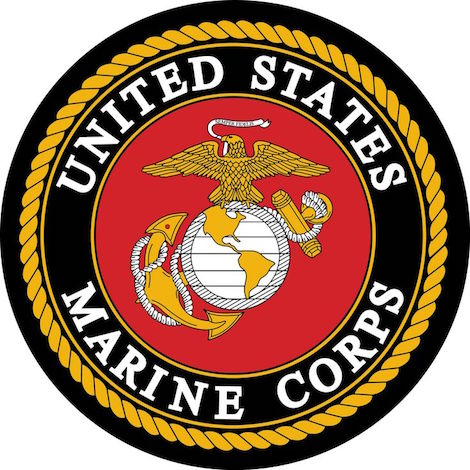
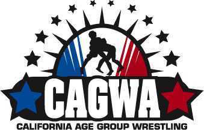

High School
For High School, I really want to go to Milikan. Specifically, COMPASS. I think that the program will help let my artistic side flourish. I’m frequently told that I’m very gifted in art, but I just don’t do enough of it. I believe that COMPASS will fix that problem, as well as let me follow my interest of graphic design.

College
In all honesty, I don’t really know where I want to go to college. I prefer to look at what’s closer to the “now”, and worry about the future when it gets closer. But, that’s not saying that I don’t have goals. I do know, that I want to go to a good college, that will let me refine my skills in my current career interests at the time.
Career Interests
As of right now, I’m currently interested in graphic design. I would like to have a job as a graphic designer, but that’s just right now. In the future, my interests could possibly change, but now, I would like to be a graphic designer. Well, there’s something else I would equally like to be, if not more. I want to be a US Marine. I’ve wanted to be one as long as I can remember. I believe that if I keep up with my exercise, and get good grades in school, than I'll be able to do both.

Goals
My goal in the future (as of right now), is to join the Marines for a few years, get married and have a family, and get a job as a graphic designer. Well, those are extremely long term goals, ones that I can’t really achieve right now. Some goals I could do closer to now, are getting in to Millikan's COMPASS, and finally winning the Dominator belt from the super tournament (CAGWA wrestling).
